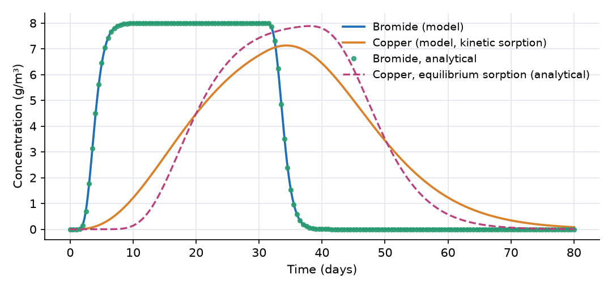
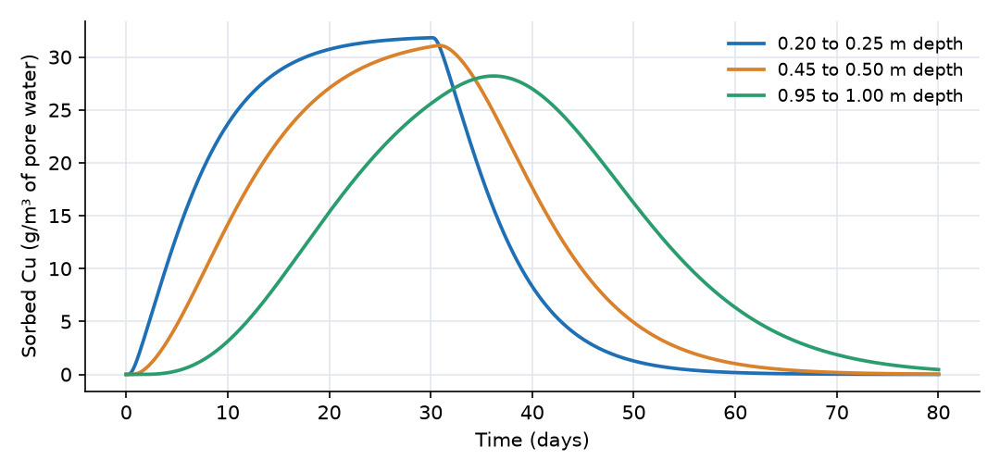

What this model represents
A column experiment: soil is packed in a tube, water is pumped through it at a steady rate, and a solution containing a contaminant is fed for a while before switching back to clean water. Measuring the effluent gives a breakthrough curve. The usual practice is to add a conservative tracer (here bromide) to the same feed. The tracer fixes the water velocity and dispersivity, and the difference between the tracer and the contaminant curves isolates sorption.
Here the column is 1 m long and 1 m² in cross section, which can be read as a large laboratory column, a lysimeter or a 1 m soil profile below an infiltration practice. Water moves through it at a Darcy flux of 0.1 m/day. The feed carries 8 g/m³ of both bromide and copper for 30 days, then clean water for another 50 days.
How it works
Water. The column is divided into 20 Groundwater cells of length Δx = 0.05 m. Each holds V = A·Δx·θ = 1 × 0.05 × 0.4 = 0.02 m³ of water. The flows are prescribed: 0.1 m³/day enters Cell_01 and the same flow passes through every link. The water storage therefore stays constant, and the average pore-water velocity is
v = Q/(A·θ) = 0.1/(1 × 0.4) = 0.25 m/day
One pore volume (0.4 m³) passes in θ·L·A/Q = 4 days.
Transport. For each mobile constituent, a link carries an advective flux taken from the upstream cell plus a dispersive flux proportional to the concentration difference (from the Constituent definition):
J = Q·C_upstream + (α·Q/Δx)·(C_from − C_to)
where α is the constituent's dispersivity and Δx is the link length. Bromide and Cu_aq use α = 0.025 m. Because each cell is fully mixed, the upstream scheme adds numerical dispersion of about Δx/2 = 0.025 m, and the implicit time stepping adds about v·Δt/2 ≈ 0.0025 m (the time step is capped at 0.02 day). The column therefore behaves as if the dispersivity were about 0.05 m, which is what the input value was chosen to produce. The Péclet number is L/α ≈ 20.
Sorption. The sorbed copper Cu_s is an Immobile_Constituent, which has no link transport. Its concentration is computed as mass divided by the water volume in the cell. The single reaction moves copper between the two phases:
r = k_s · (Cu_aq − θ·Cu_s/(ρ_b·K_d))
with stoichiometric coefficients −1 for Cu_aq and +1 for Cu_s. OpenHydroQual multiplies the rate by each cell's water volume, so the mass gained by the soil equals the mass lost from the water. At equilibrium the sorbed loading per mass of soil is q = θ·Cu_s/ρ_b = K_d·Cu_aq, a linear isotherm. Under equilibrium the copper front would move slower than the water by the retardation factor
R = 1 + ρ_b·K_d/θ = 1 + 1600 × 0.001/0.4 = 5
so copper would need 5 pore volumes, or 20 days, to reach the outlet. With k_s = 2 per day the sorbed phase relaxes toward equilibrium at a rate k_s·θ/(ρ_b·K_d) = 0.5 per day, about a 2-day time scale. This is short compared with the 20-day travel time, but not instantaneous.
Analytical check. The Ogata-Banks solution of the one-dimensional advection-dispersion equation with a step input, superimposed to form the 30-day pulse, gives the bromide curve at the outlet (R = 1) and the equilibrium copper curve (R = 5). Both use α = 0.05 m.
What to look for in the results
- Tracer. Bromide reaches half the feed concentration at the outlet at 3.8 days, about one pore volume, and matches the analytical solution to within about 0.1 g/m³. It drops back to near zero within 6 days after the feed stops.
- Retardation. Copper reaches half the feed concentration at 18.5 days, close to R = 5 pore volumes. Its curve is much more spread out than the bromide curve, because the same dispersion acts over a five times longer travel time and because sorption is kinetic.
- Nonequilibrium. Compared with the equilibrium solution (dashed), the kinetic copper curve starts earlier (1.2 g/m³ at day 10 against 0.1 g/m³), never reaches the feed concentration (peak 7.1 g/m³ at day 34), and tails far longer (1.2 g/m³ at day 60 against 0.6 g/m³). Early breakthrough with long tailing is the classic signature of rate-limited sorption in column data.
- Desorption front. After day 30 clean water strips copper from the top of the column first. The sorbed concentration at 0.25 m depth falls while the deepest cell is still near its peak (28 g/m³ at day 36). The peak value of about 32 g/m³ of pore water corresponds to q = 0.4 × 32/1600 = 0.008 g/kg (8 mg/kg), which is K_d × 8 g/m³.
- Mass recovery. The feed delivers 0.1 m³/day × 8 g/m³ × 30 days = 24 g of each constituent. Integrating the mass transfer through Flow_20 gives 24.00 g of bromide and 23.95 g of copper leaving the column by day 80, and 0.05 g of copper is still sorbed in the column. The dispersive part of the outlet flux is 0.0006 g.
Assumptions and limitations
- The column is saturated and the flow is steady and prescribed; heads and hydraulic conductivity play no role.
- Sorption is linear, reversible and first order, with a single sorption site. Two-site models (an equilibrium fraction plus a kinetic fraction) or nonlinear isotherms are common refinements.
- The 20-cell grid adds numerical dispersion of about Δx/2. The physical dispersivity was reduced by this amount so that the total matches the target value of 0.05 m; when refining the grid, increase the input dispersivity accordingly.
- Bromide and copper use the same dispersivity; molecular diffusion is neglected.
- The effluent concentration is read from Cell_20, the well-mixed bottom cell.
Model diagram
Hover a block or link to see its name and type. Arrows show the positive flow direction.
Components
Click a component to see every property set in the model file, with units and meaning.
Blocks 21
Storage compartments: each holds water (and dissolved or particulate mass) and has a state that evolves in time.
20 × Groundwater cellGroundwater cell · groundwaterTwenty saturated soil cells, Cell_01 at the top (inlet) to Cell_20 at the bottom (outlet). Each is 1 m² in cross section and 0.05 m long, with porosity and moisture content 0.4, so it holds 0.02 m³ of water. The diagram draws them as four stacks of five, read top to bottom and left to right. Cell_01 receives the inflow from flow.txt with the concentrations in inflow_concentration.txt.
flow.txt with the concentrations in inflow_concentration.txt.Cell_01, Cell_02, Cell_03, Cell_04, Cell_05, Cell_06, Cell_07, Cell_08 …
Showing properties of Cell_01.
Groundwater cell: Groundwater cell
| Property | Value | Unit | Meaning |
|---|---|---|---|
| Bromide: Concentration | 0 | g/m3 | Computed as mass/(Storage+0.00001) |
| Bromide: Time Variable Inflow concentration | inflow_concentration.txt | g/m^3 | |
| Cu_aq: Concentration | 0 | g/m3 | Computed as mass/(Storage+0.00001) |
| Cu_aq: Time Variable Inflow concentration | inflow_concentration.txt | g/m^3 | |
| Cu_s: Concentration per total volume | 0 | g/m3 | Computed as mass/(Storage+0.00001) |
| Cell area | 1.0 | m2 | |
| Bottom Elevation | -0.05 | m | Elevation of the bottom of the groundwater cell, used to determine hydraulic gradients and head. |
| Cell Depth | 0.05 | m | |
| Hydraulic Conductivity | 1 | m/day | Rate at which water can move through pore spaces or fractures in the subsurface. Influences groundwater flow velocity. |
| Inflow time series | flow.txt | m^3/day | Time series representing external water input to the groundwater cell, such as recharge from precipitation or surface water. |
| Initial Moisture Content | 0.4 | Computed as Storage/(depth*area) | |
| Porosity | 0.4 | The fraction of the total volume of the subsurface that is occupied by voids or pores, representing storage capacity. | |
| Specific Storage | 0.01 | 1/m | Volume of water released per unit volume of aquifer per unit change in head. Reflects aquifer compressibility. |
Outletfixed_headA fixed-head boundary below the column that receives the effluent. Its state is not solved for, so it acts as a free outflow.
fixed_head: Fixed-head boundary
| Property | Value | Unit | Meaning |
|---|---|---|---|
| Initial Storage | 100000 | m3 | |
| Head | -1.5 | m |
Links 20
Connections that move water (and the mass it carries) between blocks.
20 × Time-Dependent flowTime-Dependent flow · mass_transferTwenty links that carry the water downward at 0.1 m³/day (flow.txt). Flow_01 to Flow_19 join neighbouring cells, are 0.05 m long and have 1 m² of area, which sets the dispersive exchange between cells. Flow_20 joins Cell_20 to the Outlet boundary. Its length is set to 1000 m so that the dispersive term α·Q/L, which would otherwise draw solute into the zero-concentration boundary, is negligible and the outflow is purely advective. Positive flow is downward.
flow.txt). Flow_01 to Flow_19 join neighbouring cells, are 0.05 m long and have 1 m² of area, which sets the dispersive exchange between cells. Flow_20 joins Cell_20 to the Outlet boundary. Its length is set to 1000 m so that the dispersive term α·Q/L, which would otherwise draw solute into the zero-concentration boundary, is negligible and the outflow is purely advective. Positive flow is downward.Flow_01, Flow_02, Flow_03, Flow_04, Flow_05, Flow_06, Flow_07, Flow_08 …
Showing properties of Flow_01.
Time-Dependent flow: Time-Dependent flow
| Property | Value | Unit | Meaning |
|---|---|---|---|
| Cross-sectional area of the connection | 1.0 | m2 | Flow area shared by the two blocks. It multiplies the molecular-diffusion term in Constituent::diffusive_masstransfer, so the default of 1e-9 m^2 suppresses diffusion entirely no matter what diffusion_coefficient is set on the constituent. Set it to the real interface area for any model where molecular diffusion matters. The tiny default is kept so existing models are unchanged. |
| Flow rate | flow.txt | m^3/day | |
| Separation between the connected blocks | 0.05 | m | Distance between the centres of the two connected blocks. It divides the diffusive/dispersive exchange in Constituent::diffusive_masstransfer, so it must be the real separation or dispersion is scaled wrongly: a chain of 0.0254 m cells left at the default 1 m disperses 39x too weakly, and a dispersivity calibrated that way absorbs the error. The default of 1 m is kept only so existing models are unchanged -- set it for any model where dispersion or diffusion matters. |
Constituents 3
Substances or particles carried by the water.
BromideConstituentA conservative tracer. It moves with the water and is not sorbed or degraded.
Constituent: Chemical constituent
| Property | Value | Unit | Meaning |
|---|---|---|---|
| Concentration | 0 | g/m3 | Computed as mass/(Storage+0.00001) |
| Constant Inflow concentration | 0 | g/m3 | |
| Diffusion Coefficient | 0 | m2/day | |
| Dispersivity | 0.025 | m | |
| Stoichiometric Constant | 0 |
Cu_aqConstituentDissolved copper (g/m³ of pore water). Moves with the water and exchanges with the solid.
Constituent: Chemical constituent
| Property | Value | Unit | Meaning |
|---|---|---|---|
| Concentration | 0 | g/m3 | Computed as mass/(Storage+0.00001) |
| Constant Inflow concentration | 0 | g/m3 | |
| Diffusion Coefficient | 0 | m2/day | |
| Dispersivity | 0.025 | m | |
| Stoichiometric Constant | 0 |
Cu_sImmobile_Constituent · mass_transferCopper sorbed on the soil. An Immobile_Constituent: it does not move between cells. Its concentration is mass per volume of pore water (g/m³); the loading per mass of soil is q = θ·Cu_s/ρ_b (g/kg).
Immobile_Constituent: Immobile constituent
| Property | Value | Unit | Meaning |
|---|---|---|---|
| Concentration per total volume | 0 | g/m3 | Computed as mass/(Storage+0.00001) |
| Stoichiometric Constant | 0 |
Reaction parameters 4
Named coefficients used in reaction rate expressions.
K_dReactionParameterLinear distribution coefficient (m³/kg). 0.001 m³/kg is 1 L/kg.
ReactionParameter: Reaction Parameter
| Property | Value | Unit | Meaning |
|---|---|---|---|
| Arrhenius temperature correction factor | 1 | ||
| Value | 0.001 | ||
| Reference Temperature | 20 |
k_sReactionParameterFirst-order sorption rate coefficient (1/day).
ReactionParameter: Reaction Parameter
| Property | Value | Unit | Meaning |
|---|---|---|---|
| Arrhenius temperature correction factor | 1 | ||
| Value | 2 | ||
| Reference Temperature | 20 |
rho_bReactionParameterDry bulk density of the soil (kg/m³).
ReactionParameter: Reaction Parameter
| Property | Value | Unit | Meaning |
|---|---|---|---|
| Arrhenius temperature correction factor | 1 | ||
| Value | 1600 | ||
| Reference Temperature | 20 |
thetaReactionParameterPorosity of the saturated soil (dimensionless), used to convert between pore-water and solid-phase concentrations.
ReactionParameter: Reaction Parameter
| Property | Value | Unit | Meaning |
|---|---|---|---|
| Arrhenius temperature correction factor | 1 | ||
| Value | 0.4 | ||
| Reference Temperature | 20 |
Reactions 1
Transformations among constituents, each with a stoichiometry and a rate expression.
SorptionReactionNet transfer of copper from the pore water to the soil, rate k_s·(Cu_aq − θ·Cu_s/(ρ_b·K_d)). Negative values mean desorption.
Reaction: Chemical reaction
(k_s*(Cu_aq-theta*Cu_s/(rho_b*K_d)))| Constituent | Stoichiometric coefficient |
|---|---|
| Cu_aq | -1 |
| Cu_s | 1 |
Input files
inflow_concentration.txt | Concentration of the inflow (g/m³) versus time (days), used for both bromide and copper: 8 g/m³ from day 0 to day 30, then 0. |
flow.txt | Flow rate through the column (m³/day) versus time (days): a constant 0.1 m³/day. Read both as the inflow of Cell_01 and as the flow of every link. |
analytical_bromide.csv | Ogata-Banks solution for the bromide pulse at the column outlet (days, g/m³), with dispersivity 0.05 m. For the comparison plot only. |
analytical_cu_equilibrium.csv | Ogata-Banks solution for copper assuming instantaneous (equilibrium) sorption, R = 5 (days, g/m³). For the comparison plot only. |
Simulation settings
| Start time | 0 |
| End time | 80 |
| Initial time step | 0.01 |
| Write interval (steps) | 10 |
Results
Produced by running the downloaded model unchanged.

